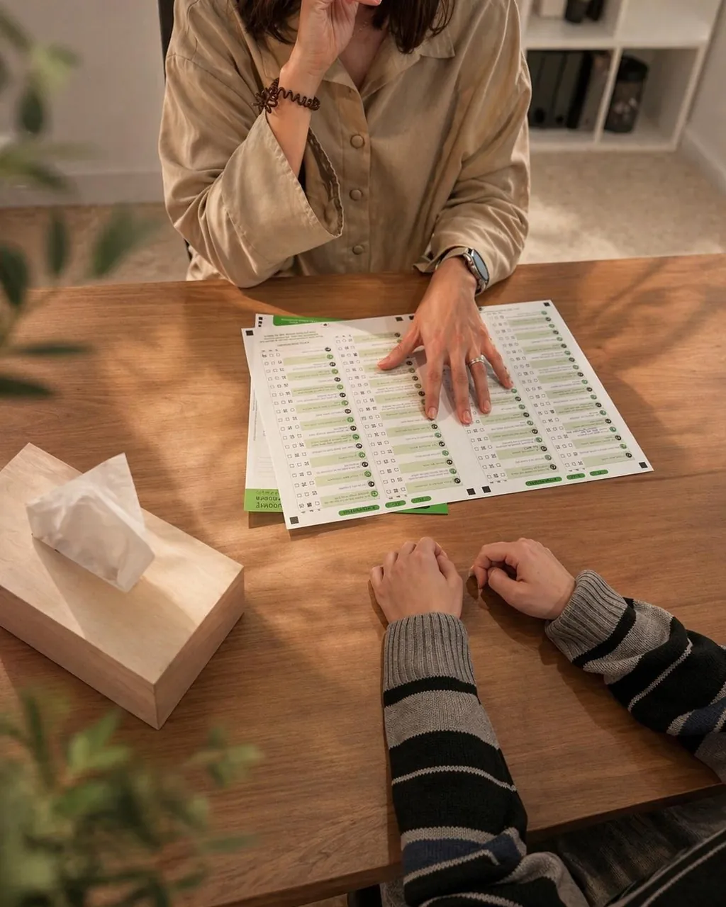

Primera entrevista
Escoltem la família i la persona. Situem la demanda i acordem com continuar.
Quan alguna cosa no acaba d'anar i costa saber per què, la UAD ordena el procés: escolta, avalua, ho analitza en equip i torna una comprensió clara del que està passant i del que pot ajudar.
Què és
La UAD reuneix professionals de psicologia, psicopedagogia i logopèdia perquè el que s'observa des de cada disciplina es posi en comú. El resultat no és un número: és una explicació entenedora i unes recomanacions concretes.
Està especialment pensada per a infància i adolescència —dificultats d'aprenentatge, lectura i escriptura, atenció, neurodesenvolupament, TEA, TDA/TDAH—, però també atén adults segons el cas.
Quan el procés apunta cap a un seguiment clínic o psiquiàtric, es coordina amb Pragma Clínic sense fer repetir la història.

El procés, pas a pas
Escoltem la família i la persona. Situem la demanda i acordem com continuar.
Proves i observació segons l'edat i el motiu de consulta, en diverses sessions.
L'equip posa en comú la informació des de la psicologia, la psicopedagogia i la logopèdia.
Arribem a una comprensió compartida del que passa i del que pot ajudar.
Document clar, útil per a la família i per a l'escola o altres serveis.
Recomanacions concretes i acompanyament per posar-les en marxa.
Els terminis i el nombre de sessions depenen del motiu de consulta i de l'edat, i es concreten a la primera entrevista.
Quan té sentit
Dificultats amb la lectura, l'escriptura o les matemàtiques que no milloren amb el suport habitual.
Costa mantenir l'atenció, acabar les tasques o gestionar el temps i el material.
Dubtes sobre el neurodesenvolupament, la comunicació o la manera de relacionar-se.
Ja hi ha un diagnòstic però cal actualitzar-lo o entendre'l millor per prendre decisions.
Comencem
Demana una primera entrevista i t'expliquem com seria el procés en el vostre cas concret.
Demanar hora